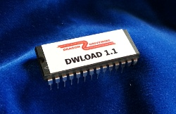

About DriveWire
Overview
DriveWire is a way to connect your Dragon to a PC. It allows you to transfer files from the PC to your Dragon, or to use the PC as a virtual disk for the Dragon. A server program runs on the PC and services requests from the Dragon. Instead of a PC, a stand-alone DriveWire server like uDW can be used.
DriveWire software
DriveWire on the Dragon uses the printer port. On the Dragon, software is needed that can "talk" to the DriveWire server through the printer port. Operating systems like HDB-DOS and NitrOS-9 have support for DriveWire, and can use the DriveWire server as a full replacement for a normal floppy or hard disk drive.
For Dragon there is also DWLOAD - a small program that can be used to load programs from the DriveWire server without needing a disk operating system. DWLOAD can be embedded in a modified BASIC ROM, replacing the "DLOAD" command.
HDB-DOS
HDB-DOS has its roots in the Disk Enhanced Color Basic (DECB) for Tandy Color Computers, and is compatible with the Tandy floppy drive controllers. It adds support for hard drives and for virtual disks over DriveWire.
When HDB-DOS was ported to Dragon, it became possible for Dragon users to use DriveWire and Tandy floppy drives on the Dragon, while keeping the Dragon BASIC. Note that it doesn't support Dragon floppy drive controllers.
Extended DosPlus
DosPlus is compatible with Dragon DOS. In 2015 Pere Serrat extended DosPlus to give it DriveWire support. File images in VHD format can be accessed via DriveWire using the normal LOAD and RUN commands. In addition, a DWLOAD command is integrated for direct access to raw files on the DriveWire server.NitrOS-9
NitrOS-9 is an open-source multi-tasking operating system for Dragon and Tandy Color Computers. It was initially based on OS-9 from Microware, and remains mostly compatible.DWLOAD
DWLOAD is designed to be so small that it fits into unused parts of the Dragon BASIC ROM. Nonetheless, it allows you to simply download and run files from the DriveWire server from within BASIC without any resident use of memory. DWLOAD can be enhanced by "DriveWire Executable Extension Blocks" (dweebs) which are small program loaded from the server to provide further DriveWire capabilities on demand. Some examples are "VLOAD" to load files from VDK images residing on the DriveWire server, "LROM" to load a ROM image into high RAM, and "DOS" to boot NitrOS-9 over DriveWire.
DWLOAD can also be used together with HDB-DOS or Dragon DOS. You can for instance load files from the PC (plain files or from inside VDK images) and save them on your Dragon DOS floppy drive. Or load files from your Dragon DOS floppy drive and save them on the PC (currently only BASIC files supported via the "SAVE" dweeb).
Requirements
In addition to your Dragon 32 or Dragon 64 or compatible home computer you will need either
- DriveWire adapter + PC running DriveWire server (DW4)
- uDW microserver
Of course, on the Dragon you will need DriveWire software. If you have the DWLOAD EPROM you are all set and can load everything (also HDB-DOS or NitrOS-9) via DriveWire. Otherwise, software (including a DWLOAD program) can be loaded from disk or cassette tape to get started.

|  |
Take me to the product list
DriveWire software for Dragon
- DWLOAD - the easiest way to use DriveWire link
- DosPlus extended with DriveWire support link
- HDBDOS ported to Dragon 32 (can also run from RAM) link
- NitrOS-9 for your Dragon 32 (memory extension recommended) link
- FUZIX for Dragon or CoCo2 (work in progress, additional hardware needed) link
This software can be downloaded for free and is open-source. See the respective web sites for licensing and authorship. There are many contributors, in some cases I am the project maintainer, and/or have written the Dragon port.
DriveWire server software
For running a DriveWire server on an external computer. Not needed when using the uDW.
More links
For more information on Dragon computers and a vital community, please see the excellent World of Dragon web site. The wiki contains more DriveWire information.
Acknowledgements
DriveWire was created by Boisy Pitre for the Tandy Color Computer and sold through Cloud-9. Later, the protocol was extended by Boisy Pitre and Aaron Wolfe, and improved bit banger routines from Darren Atkinson were incorporated. First DIY adapters for the Dragon parallel port were made by Ken H. from the Dragon forums based on information from Phill Harvey-Smith and Darren Atkinson. HDB-DOS was ported to the Dragon by Tormod Volden. DriveWire support was added to DosPlus by Pere Serrat, who also has written many useful "dweebs" for DWLOAD.